Project 5: Exploring Diffusion Models
Student Name: Kelvin Huang
Part A: The Power of Diffusion Models!
Part 0: Setup
We use the DeepFloyd IF diffusion model, a two-stage text-to-image model by Stability AI. The first stage generates small images, and the second refines them to higher resolutions.
My random seed is 180 throughout the project.
Inference Steps: 20
Size: 64x64
Size: 256x256
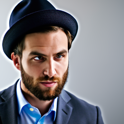
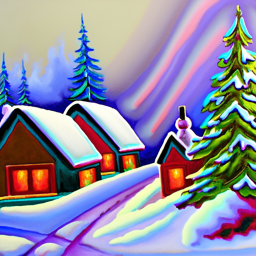
Inference Steps: 80
Size: 64x64
Size: 256x256
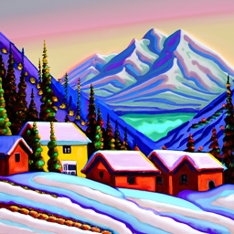
Reflection:
At a lower resolution (64x64 from Stage 1), the outputs capture the basic structure and color scheme corresponding to the prompts but lack fine details, resulting in somewhat abstract representations. In contrast, the higher resolution (256x256 from Stage 2) images refine these initial representations, adding significant detail and texture, resulting in visually coherent outputs. Varying num_inference_steps (e.g., from 20 to 80) reveals a trade-off: fewer steps produce faster but less refined results, while more steps improve the quality at the expense of computation time.
Part 1: Sampling Loops
Diffusion models generate images by reversing a noise-adding process. Starting with a clean image \( x_0 \), noise is iteratively added at each timestep \( t \), creating progressively noisier images \( x_t \) until reaching pure noise at \( t = T \). The goal of the diffusion model is to predict and remove this noise step-by-step, enabling the reconstruction of \( x_0 \) or partially denoised versions like \( x_{t-1} \).
The generation process begins with a pure Gaussian noise sample \( x_T \) at \( T = 1000 \) (for DeepFloyd). Using learned noise coefficients \( \bar{\alpha}_t \), the model estimates the noise in \( x_t \), which is then subtracted to obtain a cleaner image for the previous timestep. This iterative sampling continues until a clean image \( x_0 \) is reconstructed. The noise coefficients \( \bar{\alpha}_t \) and the denoising steps are pre-determined during training.
Part 1.1: Implementing the Forward Process
A key component of diffusion models is the forward process, which takes a clean image \( x_0 \) and progressively adds noise to it, resulting in noisy versions \( x_t \) at each timestep \( t \). This process is defined mathematically as:
\( q(x_t | x_0) = \mathcal{N}(x_t; \sqrt{\bar{\alpha}_t} x_0, (1 - \bar{\alpha}_t) \mathbf{I}) \)
This is equivalent to computing:
\( x_t = \sqrt{\bar{\alpha}_t} x_0 + \sqrt{1 - \bar{\alpha}_t} \epsilon \),
where \( \epsilon \sim \mathcal{N}(0, 1) \). Here, \( x_t \) is sampled from a Gaussian distribution with mean \( \sqrt{\bar{\alpha}_t} x_0 \) and variance \( (1 - \bar{\alpha}_t) \). Note that the forward process involves both adding noise and scaling the original image \( x_0 \) by \( \sqrt{\bar{\alpha}_t} \).

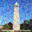
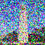
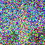
Part 1.2: Classical Denoising
Trying to use Gaussian blur filtering to try to remove the noise above.
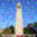
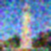
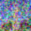
In applying Gaussian blur, we used a kernel size of \( 7 \) and a standard deviation (\( \sigma \)) of \( 1.3 \). While this method reduced some noise effectively, it also blurred important details, showing the limitations of classical denoising techniques.
Part 1.3: One-Step Denoising
Used a pretrained diffusion model to denoise the images. The denoiser, available at stage_1.unet, is a U-Net architecture trained on a large dataset of \((x_0, x_t)\) image pairs. This model predicts and removes Gaussian noise from noisy images, effectively reconstructing (or approximating) the original clean image \(x_0\).This U-Net is conditioned on the timestep \(t\).
Part 1.4: Iterative Denoising
To efficiently denoise images iteratively, we can create a list of timesteps, called strided_timesteps, which skips steps in the denoising process.
This list starts with the noisiest image (highest \( t \)) and ends with the clean image (lowest \( t \)), such that strided_timesteps[-1] corresponds to a clean image.
A simple approach is to use a regular stride step (e.g., a stride of 30 works well).
On the \( i \)-th denoising step, we are at \( t = \text{strided_timesteps}[i] \), and want to get to \( t' = \text{strided_timesteps}[i+1] \) (a less noisy image). The denoising step is computed using the formula:
\( x_{t'} = \frac{\sqrt{\bar{\alpha}_{t'}\beta_t}}{1 - \bar{\alpha}_t} x_0 + \frac{\sqrt{\alpha_t}(1 - \bar{\alpha}_{t'})}{1 - \bar{\alpha}_t} x_t + \nu_{\sigma} \)
Where:
- \( x_t \): The image at timestep \( t \).
- \( x_{t'} \): The denoised image at the next timestep \( t' \) (less noisy).
- \( \bar{\alpha}_t \): Defined by the cumulative product of alphas,
alphas_cumprod. - \( \alpha_t = \frac{\bar{\alpha}_t}{\bar{\alpha}_{t'}} \).
- \( \beta_t = 1 - \alpha_t \).
- \( x_0 \): The current estimate of the clean image (as computed in Section 1.3).
- \( \nu_{\sigma} \): Random noise, also predicted by the model.
The random noise term \( \nu_{\sigma} \) is predicted by the model (e.g., DeepFloyd), and the exact process to compute it is abstracted using the add_variance function.
This iterative approach progressively refines the image, transitioning from noise to a clean approximation.
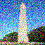
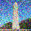
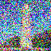
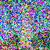

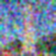
Part 1.5: Diffusion Model Sampling
By setting i_start = 0 and passing in random noise, we use the diffusion model to generate images from scratch. The process iteratively refines the noisy input into coherent images, as demonstrated below.
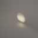
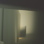
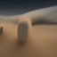
Part 1.6: Classifier-Free Guidance (CFG)
We noticed that the generated images in the prior section are not very good, and some are completely nonsensical. To improve the quality of the generated images, we use a technique called Classifier-Free Guidance (CFG).
In CFG, we compute both a conditional and an unconditional noise estimate. We denote these as \( \epsilon_c \) and \( \epsilon_u \). Then, we let our new noise estimate be:
\( \epsilon = \epsilon_u + \gamma (\epsilon_c - \epsilon_u) \)
Where \( \gamma \) controls the strength of CFG. Notice that for \( \gamma = 0 \), we get an unconditional noise estimate, and for \( \gamma = 1 \), we get the conditional noise estimate. The magic happens when \( \gamma > 1 \). In this case, we get much higher-quality images.
Some images at \( \gamma = 7\)
Part 1.7: Image-to-Image Translation
In this task, we take the original test image, add a little noise, and force it back onto the image manifold without any conditioning. This process generates images that are similar to the test image but reflect slight variations based on the added noise.
Test Image: Campanile


My choice 1: Butterfly and Flower

My choice 2: Cat

Part 1.7.1: Editing Hand-Drawn and Web Images
In this task, we project nonrealistic images (e.g., paintings, sketches, or scribbles) onto the natural image manifold using the diffusion model. This demonstrates how the model transforms abstract or synthetic input into a more realistic representation.
Web Images
Paint 1: Flower
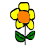
Paint 2: Twitter
Part 1.7.2: Inpainting
Given an original image \( x_{\text{orig}} \) and a binary mask \( \mathbf{m} \), the model creates a new image that retains the original content where \( \mathbf{m} = 0 \), but generates new content where \( \mathbf{m} = 1 \).
Run the diffusion denoising loop, but at each step, after obtaining \( x_t \), we "force" \( x_t \) to match the original image \( x_{\text{orig}} \) wherever \( \mathbf{m} = 0 \). Mathematically, this is represented as:
\( x_t \leftarrow \mathbf{m} x_t + (1 - \mathbf{m}) \text{forward}(x_{\text{orig}}, t) \)
Essentially, everything inside the edit mask \( \mathbf{m} \) is updated by the diffusion process, while everything outside the mask remains consistent with the original image, with the correct amount of noise added for the current timestep \( t \).
Test Image: Campanile

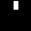
My Choise: Bird

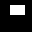
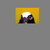
My Choise: Beach
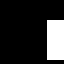

Part 1.7.3: Text-Conditional Image-to-Image Translation
In this section, we extend image-to-image translation by incorporating a text prompt to control the generated content. The text prompt guides the translation process, allowing for more specific and targeted modifications.
Test Image: Campanile
Text Prompt: "a rocket ship"

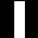
Test Image: Beach
Text Prompt: "a man wearing a hat"


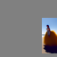
Test Image: Man
Text Prompt: "a rocket ship"

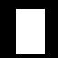
1.8 Visual Anagrams
In this section, we create optical illusions with diffusion models by using a clever combination of transformations and denoising steps.
\[ \epsilon_1 = \text{UNet}(x_t, t, p_1) \\ \epsilon_2 = \text{flip}(\text{UNet}(\text{flip}(x_t), t, p_2)) \\ \epsilon = (\epsilon_1 + \epsilon_2) / 2 \]
First denoise an image \( x_t \) at step \( t \) normally with prompt 1 to obtain noise estimate \( \epsilon_1 \).
Then flip \( x_t \) upside down, and denoise with prompt 2 to get noise estimate \( \epsilon_2 \).
We can flip \( \epsilon_2 \) back, to make it right-side up, and average the two noise estimates.
We can then perform a reverse/denoising diffusion step with the averaged noise estimate.
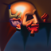
1.9 Hybrid Images
In order to create hybrid images with a diffusion model, create a composite noise estimate \( \epsilon \), by estimating the noise with two different text prompts, and then combining low frequencies from one noise estimate with high frequencies of the other.
\( \epsilon_1 = \text{UNet}(x_t, t, p_1) \)
\( \epsilon_2 = \text{UNet}(x_t, t, p_2) \)
\( \epsilon = f_{\text{lowpass}}(\epsilon_1) + f_{\text{highpass}}(\epsilon_2) \)
UNet is the diffusion model UNet, \( f_{\text{lowpass}} \) is a low-pass function, \( f_{\text{highpass}} \) is a high-pass function, and \( p_1 \), \( p_2 \) are two different text prompt embeddings. Our final noise estimate is \( \epsilon \).
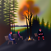
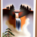
Gaussian blur of kernel size 33 and sigma 2.
Hybrid Image 1: like a skull from far away but a waterfall from close up.
Hybrid Image 2: like a old man from far away but people around a campfire from close up.
Hybrid Image 3: like a dog from far away but waterfall from close up.
Part B: Diffusion Models from Scratch!
Part 1: Training a Single-Step Denoising UNet
UNet and Operations
Build a simple one-step denoiser.
Given a noisy image \( z \), we aim to train a denoiser
\( D_\theta \) such that it maps \( z \) to a clean image \( x \). To do so, we can optimize over an
\( L_2 \) loss:
\( L = \mathbb{E}_{z,x} \| D_\theta(z) - x \|^2 \)


Training Data Pairs
To train our denoiser, we need to generate training data pairs of \((z, x)\), where each \(x\) is a clean MNIST digit. For each training batch, we can generate \(z\) from \(x\) using the following noising process:
\( z = x + \sigma \epsilon, \quad \epsilon \sim \mathcal{N}(0, \mathbf{I}) \).
Here is what I used for the training data pairs:
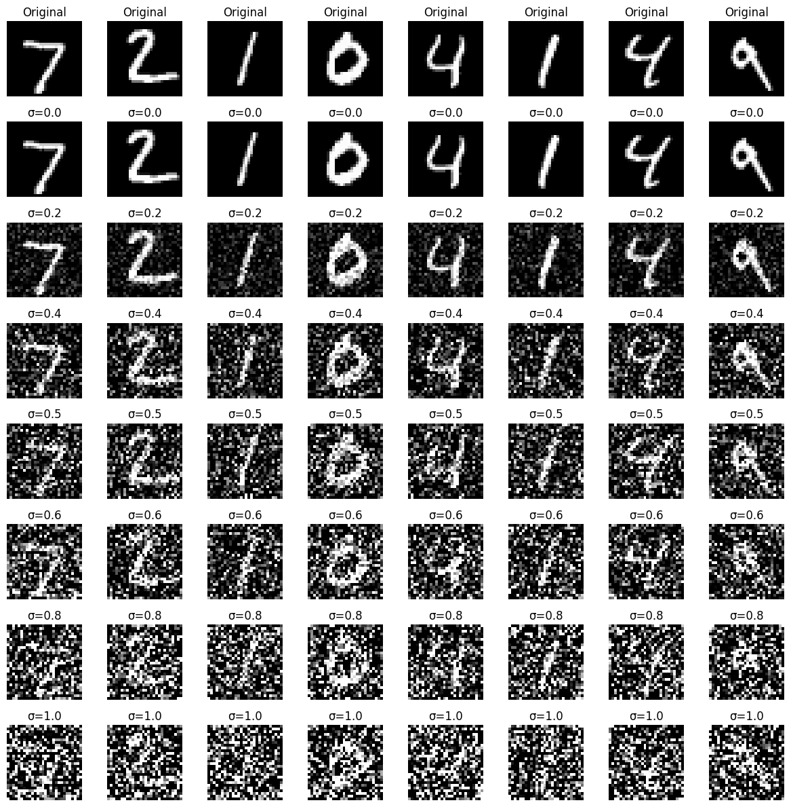
Training
- Objective: Train a denoiser to remove noise \( \sigma = 0.5 \) from clean MNIST images \( x \).
- Dataset: Use
torchvision.datasets.MNISTfor training and testing. Train on the training set only, shuffling before creating the dataloader. Batch size: \( 256 \). Train for \( 5 \) epochs. - Model: Use the UNet architecture with hidden dimension \( D = 128 \).
- Optimizer: Adam with learning rate \( 1 \times 10^{-4} \).
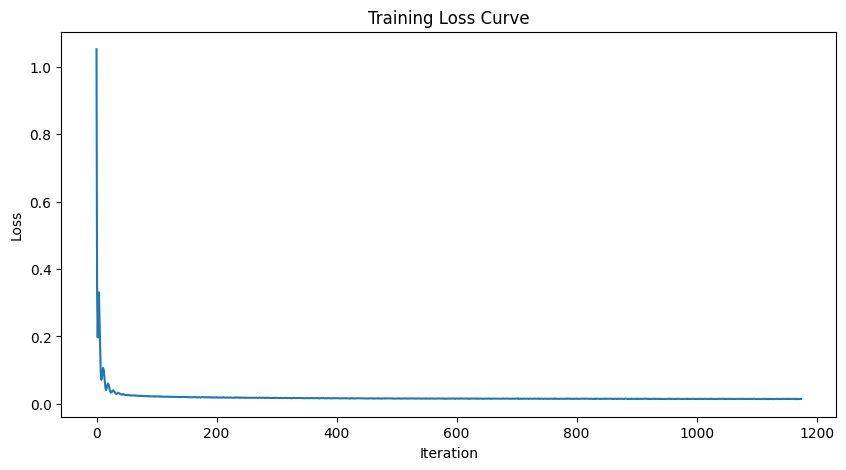
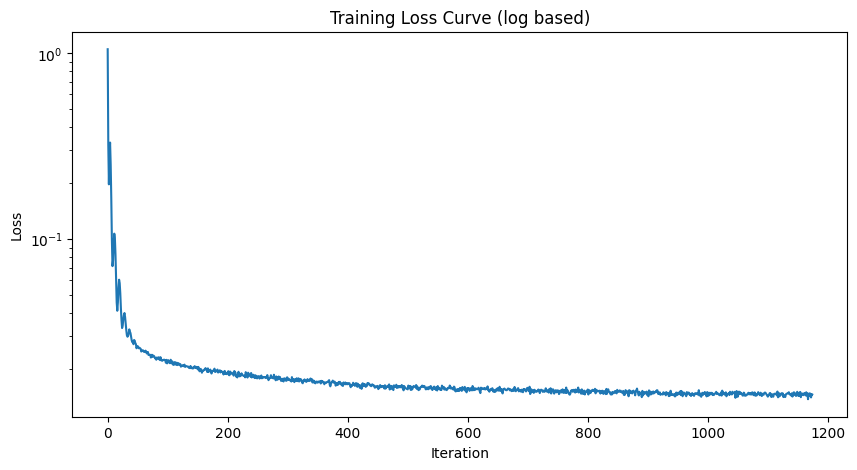
Training Result
1 Epoch
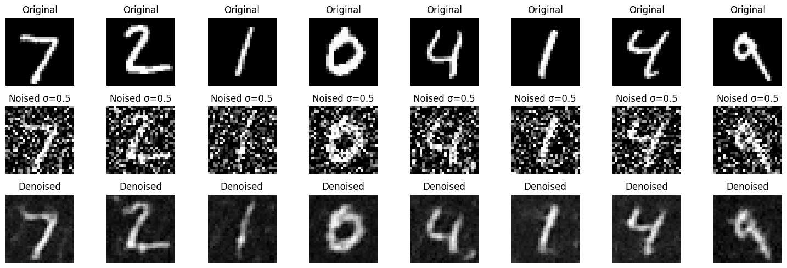
5 Epoch
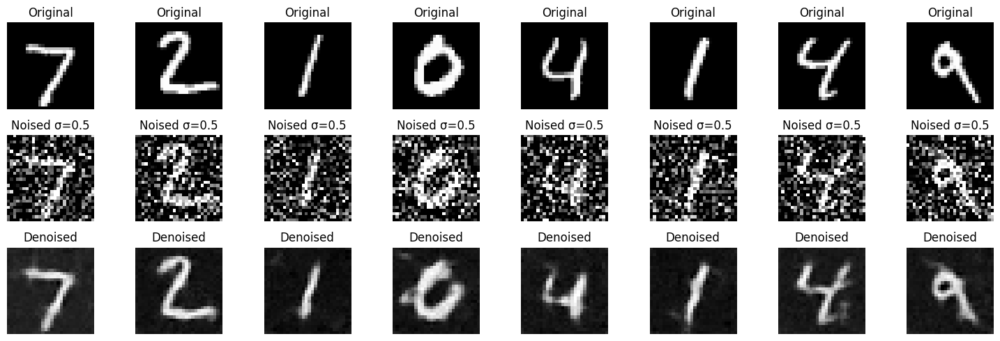
Out-of-Distribution Testing
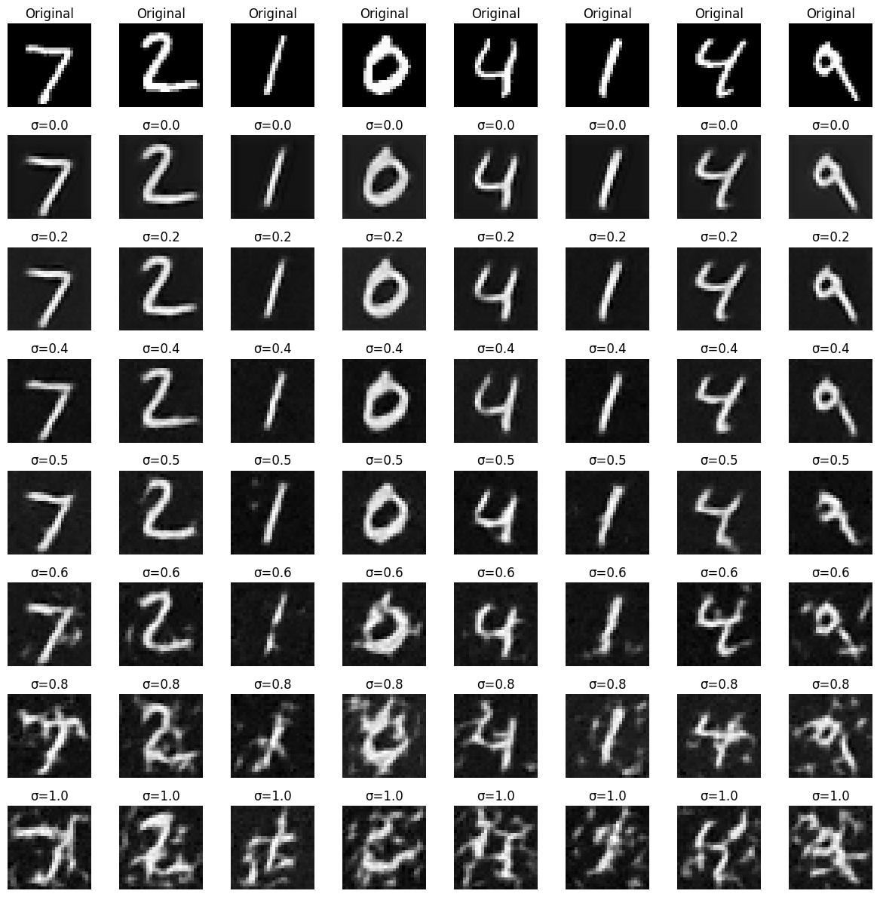
Part 2: Training a Diffusion Model
The forward process for generating noisy images is defined as:
\( x_t = \sqrt{\bar{\alpha}_t} x_0 + \sqrt{1 - \bar{\alpha}_t} \epsilon \), where \( \epsilon \sim \mathcal{N}(0, 1) \).
The training objective for denoising is to minimize the L2 loss:
\( L = \mathbb{E}_{\epsilon, x_0, t} \| \epsilon_\theta(x_t, t) - \epsilon \|^2 \).
Time Conditioned UNet and FCBlock
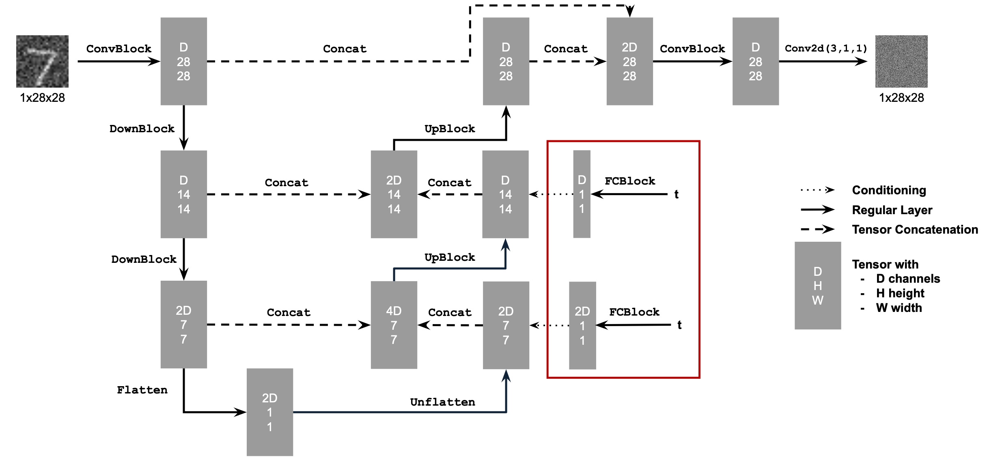

Training UNet
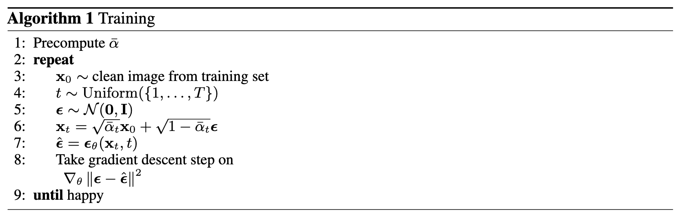
- Objective: Train a time-conditioned UNet \( \epsilon_\theta(x_t, t) \) to predict noise in \( x_t \), given a noisy image \( x_t \) and timestep \( t \).
- Dataset and Dataloader: Use the MNIST dataset via
torchvision.datasets.MNISTfor training and testing. Train only on the training set, shuffling the data before loading. Use a batch size of 128, and train for 20 epochs. Noise the image batches during dataloader fetch to improve generalization. - Model: Implement a time-conditioned UNet with a hidden dimension \( D = 64 \), as shown in algorithm B.1. Normalize \( t \) before embedding.
- Optimizer: Use Adam with an initial learning rate of \( 10^{-3} \), applying exponential learning rate decay with a gamma of \( 0.1^{(1.0 / \text{num\_epochs})} \). Update the scheduler using
scheduler.step()after each epoch.

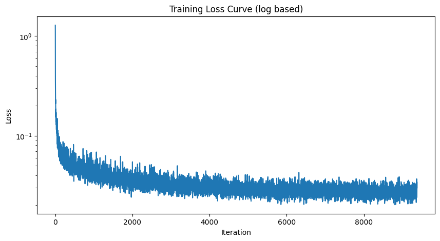
Sampling from UNet
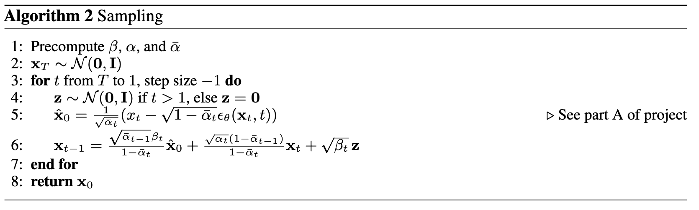
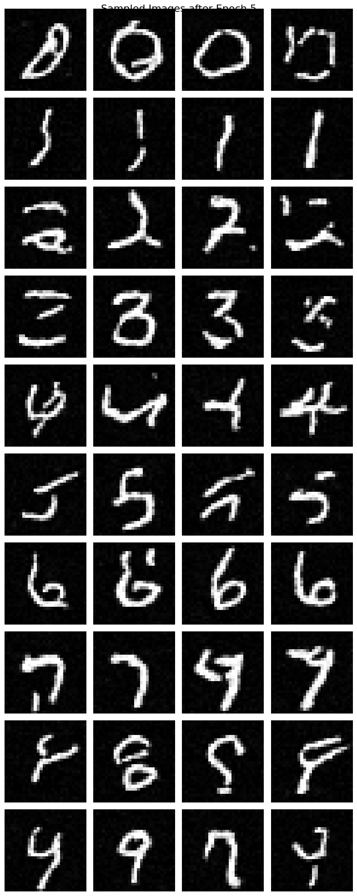
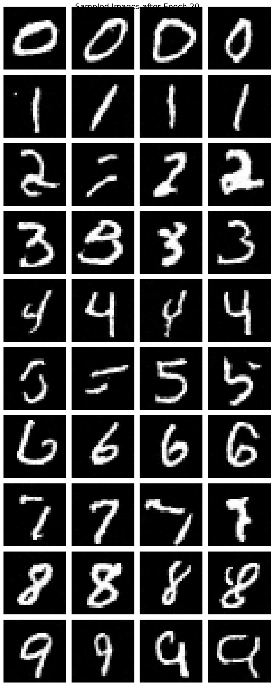
Class-Conditioning UNet
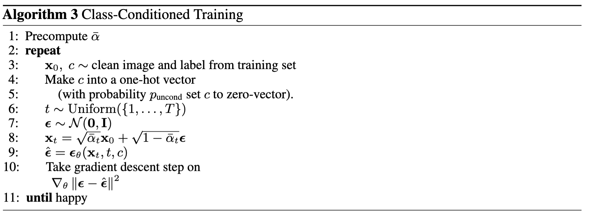
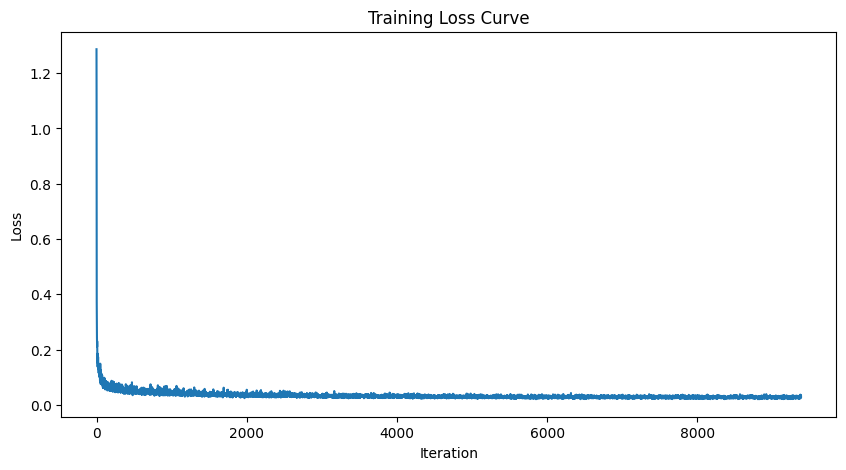
Sampling from Class-Conditioned UNet
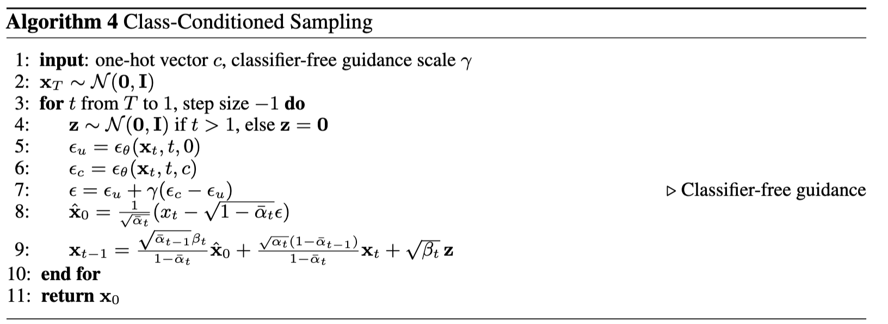
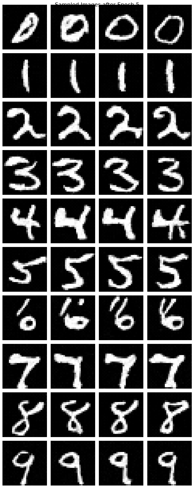
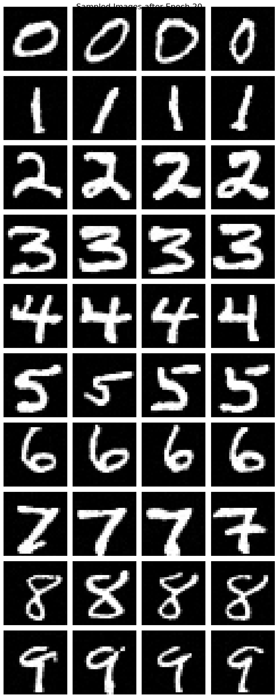
What I Learned
I have used diffusion models many times but never had the chance to implement one from scratch. This was a very valuable experience for me. A big shout-out to all the staff who developed this project—it's an awesome project, and I enjoyed it so much!